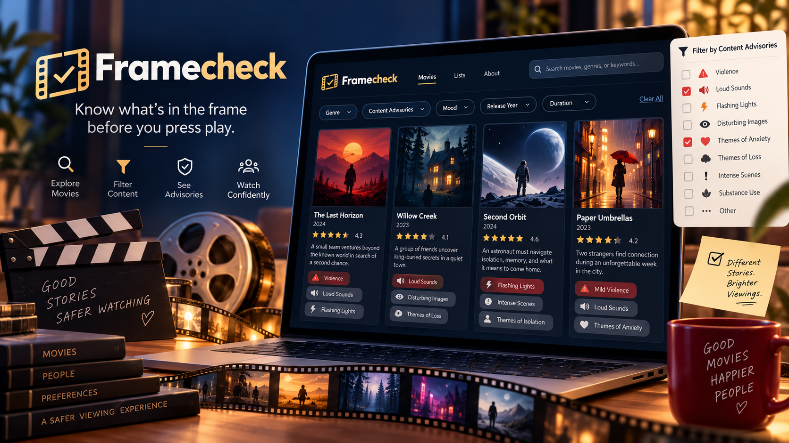

Iben Gjølberg Gedde
😊
Role : part 1
I like to go on hikes and play board games. I also enjoy learning new languages and watching movies

Check the frame before you press play.
Framecheck is a movie archive and content advisory website for movie lovers. It collects movie posters, plot summaries, reviews, and memorable scenes while also providing information about potentially sensitive content such as flashing lights, violence, and other triggering elements.
The goal of Framecheck is to help users choose movies more comfortably by allowing them to preview and filter sensitive content before watching.
Role : part 1
I like to go on hikes and play board games. I also enjoy learning new languages and watching movies
Role : part 2
I love listening to music and watching movies. I'm so happy lately because autumn, my favorite season, is finally here!
Role : part 3
I enjoy knitting, travelling and discovering new foods.
Role : part 4
I enjoy watching movies, skiing, and trying new things. I'm excited to work on this project with this team!
Role : part 5
I enjoy reading books, watching movies and exhibitions. I also really like drinking milk tea
Role : part 6
I enjoy reading books and coding in my free time. I love learning new things and exploring creative ideas through programming.